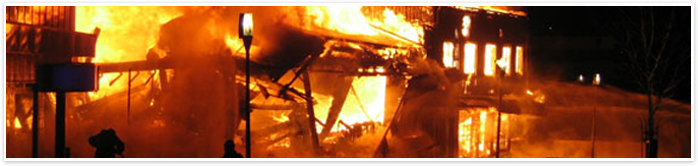

Fire Damage Restoration and Fire Cleanup

Fire Restoration Services
When disaster strikes, you need a team that can help you sort through the emotional distress and physical damage that a fire can cause. It is during this confusing and difficult time that the team at JH Construction can immediately lend a helping hand to restore order and start the emotional healing and home rebuilding process.
JH Construction started when the owner and his family suffered through a fire that engulfed their home. It was during this process, that his family experienced the emotional trauma and physical damage that a fire can leave behind. As if sorting through the damages was not enough, his family was overwhelmed by the promises made by contractors while trying to decide in a short timeframe who to trust and how best start the rebuilding process. This is why JH Construction is here for you, to get you back on your feet and provide you peace of mind that you have chosen a company that will understand your needs and work tirelessly with engineers, architects, insurance companies and agencies so your residence to be (can be) reconstructed in a professional and responsible manner - so it once again can be called HOME.
Why Choose JH Construction:
- A team that will immediately secure your home to minimize further damage or vandalism to your cherished belongings.
- Provide you with a local temporary residence while your home is being reconstructed.
JH Construction works with a team of architects and engineers to quickly assess the damage and begin the reconstruction process. At your request, it is during this process that JH Construction will work with you to discuss your floor plan/house modifications and/or room additions.
- JH Construction works with your Insurance Company to significantly increase items and/or repairs to properly and thoroughly repair your home. In the end you get a BETTER home.
- We Work with damage inventory experts to assess the personal property damages and ensure you receive maximum compensation to replace those valuables consumed or damaged by the fire.
- The owner of JH Construction has been in your situation and is committed to providing you dependable service, integrity and a guarantee that he will be personally be (remove) involved in the reconstruction process of your home. The owner prides himself in being personally involved in each and every project that JH Construction works on.
- His team has the knowledge and expertise to reconstruct the home using the latest building codes and working closely with you so the materials and fixtures exceed your expectations. JH Construction has experts in kitchen and bathroom remodeling, flooring, plumbing, electrical, structural analysis, and even home entertainment.